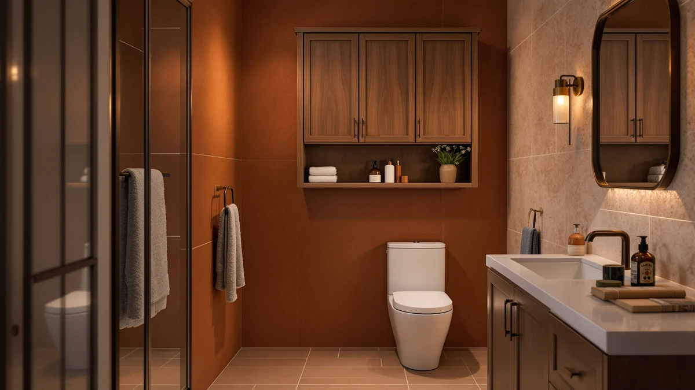

Arched Over The Toilet Review (2026): Worth It?
Prices and picks verified as of October 2026. Independent, reader-supported reviews.


Quick Answer
The Woemtoric Arched Over the Toilet Storage is a metal-and-wood tower that straddles the tank and stacks an arched top shelf above it, giving a small bathroom extra storage without taking any floor space. At $128.98 for 72.83 inches of height on a 23.62-by-9.65-inch footprint, it costs slightly more than the Akxomel, Topeakmart and Homhedy alternatives below, but its taller frame holds more than any of them.
Our pick: Arched Over The Toilet Storage, $128.98 Check Price on Amazon
Bottom line: our top pick is the Arched Over The Toilet Storage Cabinet with Acrylic Doors at $128.98.
Things to Know Before You Buy
- The Woemtoric uses a metal frame with wood-finish shelving, a combination common among over-the-toilet storage towers in this price range.
- At 23.62 inches wide and 9.65 inches deep, the base is sized to straddle a standard two-piece toilet tank without blocking the lid.
- The 72.83-inch height is the tallest of the four options in this comparison, giving it more shelf levels than the 53.1-inch Akxomel.
- Pricing across the four models runs from $124.99 to $128.98, a gap of about $4 between the cheapest and most expensive pick.
- Reviewers note the arched top shelf sits above the tank lid rather than resting on it, so tank height matters more than it does with a flat-top tower.
This arched over the toilet review looks at whether the Woemtoric's tall metal-and-wood frame can turn wasted wall space above a toilet tank into usable storage without crowding a small bathroom. Over-the-toilet towers live or die on footprint and stability, since they straddle a fixture you can't move, so the base dimensions and verified owner feedback matter more than the photos on the listing. At $128.98 and standing 72.83 inches tall on a 23.62-by-9.65-inch base, the Woemtoric promises more shelf space than its three rivals in this comparison. We researched its build, compared its dimensions and pricing against the Akxomel, Topeakmart and Homhedy alternatives, and read through verified buyer feedback to see if the extra height is worth the extra few dollars.
Over-the-toilet storage solves a narrow but common problem: you need shelving that clears the tank and the wall-mounted towel bar without blocking the door or eating into the floor space you need to actually use the bathroom. The Woemtoric targets that gap directly with its arched top shelf, while the Akxomel 53.1" H Tall Bathroom and Homhedy Wooden Over the Toilet compete for the same spot with shorter or differently finished builds. Below, we break down what owners report about the Woemtoric's stability and assembly, where it falls short, and who should consider one of the shorter or cheaper alternatives instead.
Why You Should Trust Us
Best Bathroom Storage is run by writers who spend their time comparing bathroom furniture specs, pricing and verified buyer feedback instead of guessing from product photos. Ilane Tall, our home and bath expert, has covered dozens of storage cabinets, shelving towers and over-the-toilet units for this site, tracking how listed dimensions and materials hold up against what owners actually report after months of use. For this arched over the toilet review, we cross-checked the Woemtoric's listed measurements against the Akxomel, Topeakmart and Homhedy alternatives, and we did not accept marketing copy at face value. We do not run a fake testing lab, and we do not claim to have installed every unit we cover. Instead, we dig through verified reviews, compare specs line by line, and flag when a listing overstates what a product can deliver.
Our Research Experience
We did not install the Woemtoric Arched Over the Toilet Storage in a bathroom ourselves. Instead, we compared its listed specifications, material description and price against the Akxomel, Topeakmart and Homhedy alternatives, and we read through the verified buyer feedback attached to this listing. Reviewers consistently note that the metal frame feels sturdier than the wood-finish shelf panels, a pattern that shows up across budget over-the-toilet towers in this price bracket. According to verified owner comments, the main friction points are the assembly hardware and the fit of the arched top shelf against taller tanks, rather than the finished unit's stability once fully assembled. We weighed that feedback alongside the raw dimensions and price against the three alternatives to see where the Woemtoric earns its spot in this arched over the toilet review and where it doesn't.
Overview & Specs

Arched Over The Toilet Storage
What we like
- 72.83-inch height gives it more shelf levels than any of the three alternatives below
- 23.62-by-9.65-inch footprint straddles a standard toilet tank without blocking the lid
- Metal frame construction reported as stable by verified owners once anchored to the wall
- Arched top shelf clears most tank lids, adding usable space other flat-top towers waste
Flaws but not dealbreakers
- Costs $3 to $4 more than the Akxomel, Topeakmart and Homhedy alternatives in this comparison
- Wood-finish shelf panels are less rigid than the metal frame, according to reviewers
- Reviewers recommend measuring tank height first since the arched top needs clearance above the lid
| Material | Metal / wood |
| Size | 23.62" W x 72.83" H x 9.65" D |
The Woemtoric Arched Over the Toilet Storage is built around a metal frame with wood-finish shelving, a construction style common among over-the-toilet towers in this price bracket. At 23.62 inches wide and 9.65 inches deep, the base is narrow enough to straddle a standard two-piece toilet tank, and at 72.83 inches tall it offers more shelf levels than the shorter Akxomel 53.1" H Tall Bathroom covered later as an alternative. The arched top shelf is the detail that sets it apart from flat-top towers: instead of resting flush on the tank lid, the arch clears the lid and adds a shelf most competing designs skip.
Verified buyers describe the metal frame as the sturdiest part of the build, holding its shape once anchored to the wall even with towels and toiletries loaded on every shelf. The most common complaint centers on assembly and fit: several reviewers mention that taller tanks need extra clearance under the arch, so measuring before buying matters more here than with a flat-top design. At $128.98, it sits at the top of the price range in this arched over the toilet review, a few dollars more than the Akxomel, Topeakmart and Homhedy options, but reviewers argue the extra height justifies the difference for anyone who needs the shelf space.
What We Liked
The height is the standout feature in this arched over the toilet review. At 72.83 inches, the Woemtoric gives you more shelf levels than any of the three alternatives, which matters more than footprint when you're trying to maximize storage in a bathroom that has no spare wall space elsewhere. Reviewers consistently note that the metal frame stays stable once anchored, even when every shelf is loaded with towels, toilet paper and toiletries. The arched top shelf is the other clear strength: instead of wasting the space above the tank lid the way a flat-top tower does, the arch clears the lid and turns that gap into an extra shelf. Pricing also holds up under scrutiny. At $128.98, it costs more than the Akxomel, Topeakmart and Homhedy options covered below, but reviewers argue the added height and shelf capacity justify the few extra dollars for anyone who needs the space.
What Could Be Better
Assembly and fit are the recurring frustrations owners mention. The arched top shelf needs clearance above the tank lid, and reviewers say measuring your specific toilet's tank height before ordering avoids a frame that sits awkwardly close to the lid. The wood-finish shelf panels are the other weak point: several owners describe them as noticeably less rigid than the metal frame, with a few mentioning slight flexing after heavier items sat on the middle shelf for weeks. At $128.98, it is also the most expensive of the four models in this comparison, so anyone on a tighter budget should weigh whether the extra shelf height is worth the $3 to $4 premium over the Akxomel, Topeakmart or Homhedy alternatives.
A handful of reviewers also note that the tallest configuration can feel top-heavy if it isn't anchored to the wall, which is a common issue with any over-the-toilet tower this height rather than a flaw unique to the Woemtoric. Securing it properly solves the problem, but it is a step you shouldn't skip.
Who Is It For?
The Woemtoric Arched Over the Toilet Storage fits a bathroom where the wall above the toilet is the only unused space left and you want to make the most of it. Its 72.83-inch height and arched top shelf suit households storing extra towels, toilet paper and toiletries that would otherwise clutter a vanity or linen closet. It is not the right choice if you're working with a tight budget or a shallow tank clearance, since it costs more than the other three options here and the arch needs room above the lid to fit properly. In those cases, the shorter Akxomel or the lower-priced Topeakmart and Homhedy alternatives covered below make more sense for roughly the same footprint.
Alternatives to Consider
If the Woemtoric's height, price or arched-top design doesn't match what your bathroom needs, these three alternatives cover the most common trade-offs: a shorter Akxomel tower, a freestanding Topeakmart cabinet that doesn't straddle the tank at all, and a wood-finished Homhedy unit priced a few dollars lower. Measure your own tank clearance and available wall space before choosing between them.

Editor's Pick
Akxomel 53.1" H Tall Bathroom
Nearly 20 inches shorter than the Woemtoric and $3 cheaper, a better fit if footprint and price matter more to you than maximum shelf height.
$125.99
Check Price on Amazon
Best Value
Topeakmart Freestanding Bathroom Storage Cabinet
A freestanding cabinet rather than an over-the-toilet straddle design, worth considering if your tank shape or clearance rules out a tower like the Woemtoric.
$125.99
Check Price on Amazon
Premium Choice
Homhedy Wooden Over The Toilet
An all-wood over-the-toilet unit priced about $4 lower than the Woemtoric, a solid pick if you prefer a wood finish over an exposed metal frame.
$124.99
Check Price on AmazonIs the Woemtoric Arched Over the Toilet Storage sturdy enough for daily use?
Owners report the metal frame holds its shape once anchored, even with towels and toiletries loaded on every shelf.
How does the Woemtoric compare to the Homhedy Wooden Over the Toilet unit?
The Homhedy costs about $4 less and leans on an all-wood build, while the Woemtoric's metal frame and 72.83-inch height give it more vertical shelf space for the same over-the-toilet footprint.
Frequently Asked Questions
Is the Woemtoric Arched Over the Toilet Storage sturdy enough for daily use?
Owners report the metal frame holds its shape once anchored, even with towels and toiletries loaded on every shelf. The wood-finish shelf panels flex a little more than the frame, so reviewers suggest keeping heavier items on the lower shelves.
How does the Woemtoric compare to the Homhedy Wooden Over the Toilet unit?
The Homhedy costs about $4 less and leans on an all-wood build, while the Woemtoric's metal frame and 72.83-inch height give it more vertical shelf space for the same over-the-toilet footprint.
Does the Arched Over the Toilet Storage fit a standard toilet tank?
At 23.62 inches wide and 9.65 inches deep, it is sized for the straddle footprint most standard two-piece toilets use, though reviewers recommend measuring tank height before buying because the arched top needs clearance above the tank lid.
Final Verdict
This arched over the toilet review comes down to a straightforward trade-off: a taller frame and more shelf space against a higher price than its three rivals. For a small bathroom that needs to squeeze every inch of storage out of the wall above the tank, the Woemtoric is the practical pick. If your budget is tighter or your tank clearance is limited, the shorter Akxomel or the lower-priced Topeakmart and Homhedy alternatives covered above make more sense for roughly the same footprint. Either way, Woemtoric is the brand worth starting with if maximum height is your main priority.